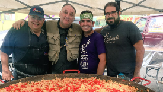

Caribbean Clima
Sweating Comes Free
Target Audience
- People of all ages who live in the Caribbean area.
- Gorvernment officials who need to know the weather conditions to prepare for storms and other possible natural disasters.
- Local charitable orgnizations who are willing to help in the event of bad weather.
Personas
Governor Wanda Vazquez
- Occupation: Governor of Puerto Rico since 2019
- Demographics and Education: University of Puerto Rico, Facultad de Derecho de la UIPR Law School
- Motive for using the site: She will use the site to know when potentially disasterous storms are approching the area of Puerto Rico.
Jose Andres

- Occupation: Chef
- Demographics and Education: Culinary School of Barcelona
- Motive for using the site: He will use the site to plan how to help feed those in during and after natural disasters.
Scenarios
- How big is an approching storm?
- When will the storm arrive?
- What kind of damage might be expected?
- What is the weather forcast at my favorite beach?
- What is the current weather forcast where I live?
- How much rain is expected today?